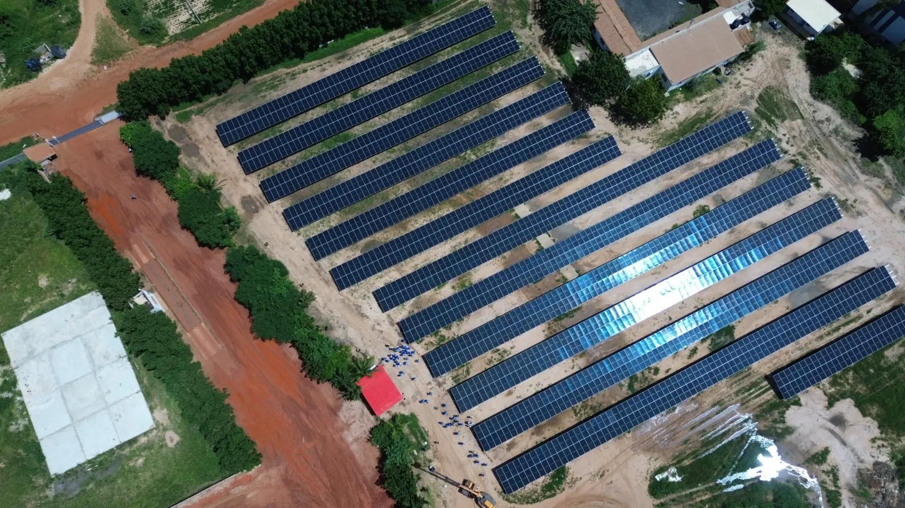

tarifs · résidentiel
Combien coûte une installation solaire au Sénégal en 2026 ?
Prix réels par type d'usage : maison 3 kWc, villa 11 kWc, entreprise 50 kWc, usine 1 MWc. Avec le coût au kWc, les économies mensuelles et le retour sur investissement.

Combien coûte une installation solaire au Sénégal ?
En 2026, le coût d'une installation solaire au Sénégal varie entre 800 000 FCFA pour un petit kit domestique et plus de 700 millions de FCFA pour une centrale industrielle de 1 MWc. Le prix au kWc installé baisse à mesure que la puissance augmente, grâce aux économies d'échelle sur le matériel, le câblage et la main-d'œuvre. Chez Dieye Solar Group, nos devis récents se situent dans ces fourchettes, hors conditions particulières (toiture complexe, site isolé, imports spéciaux).
Prix par type de projet (fourchettes 2026)
- Kit maison 3 kWc + 5 kWh de batterie : 1,8 à 2,5 millions de FCFA. Couvre éclairage, ventilateurs, télé, frigo moyen.
- Villa 11 kWc + 30 kWh de stockage : 9 à 13 millions de FCFA. Autonomie quasi-totale, climatisation et piscine comprises.
- Centrale hybride 28 kWc (type mosquée) : 22 à 28 millions de FCFA. 70 % d'autonomie, 600 000 FCFA d'économies/mois sur Senelec.
- Site agro-industriel 35 kWc avec chambre froide : 35 à 45 millions de FCFA, ombrière BTP comprise.
- Centrale injection directe 1 MWc : 550 à 750 millions de FCFA (sans stockage, 7 onduleurs Sungrow 115 kW, raccordement direct).
Ce qui fait varier le prix
Quatre postes expliquent 80 % des écarts entre devis au Sénégal. Les panneaux comptent pour 25-35 % du total : un Canadian Solar bifacial de 630 W coûte plus cher mais produit 8 à 12 % de plus qu'un panneau classique. Les batteries pèsent 30-45 % quand on les installe ; une Dyness 10 kWh est deux fois plus chère qu'une batterie plomb équivalente, mais dure 3 à 5 fois plus longtemps. Les onduleurs représentent 10-15 % : les hybrides Deye et Sungrow justifient leur prix par la bascule automatique. Enfin, la main-d'œuvre, le câblage et la structure représentent 15-25 % — souvent sous-estimés par les installateurs bas de gamme, ce qui se voit après 2 ans.
Combien d'économies sur la facture Senelec ?
Avec un tarif Senelec moyen de 125 FCFA/kWh et une production de 4,8 kWh par kWc et par jour à Thiès, on calcule facilement. Une maison de 3 kWc produit ~14 kWh/jour, soit 420 kWh/mois et 52 500 FCFA économisés chaque mois. Une villa de 11 kWc produit 1 584 kWh/mois et économise 198 000 FCFA/mois. La centrale de 28 kWc de la mosquée Abdoulaye Diop à Thiès, posée par DSG en 2025, génère 600 000 FCFA d'économies mensuelles.
Retour sur investissement : 3 à 5 ans
Pour une installation hybride bien dimensionnée au Sénégal, le ROI se situe entre 3 et 5 ans. Au-delà, la production est quasi gratuite pendant 15 à 20 ans (durée de vie panneaux + onduleur remplacé une fois). Les sites 100 % en autoconsommation sans batterie — comme la centrale de 1 MWc de Sandiara — ont un ROI encore plus court, autour de 3 ans, parce que l'investissement batterie disparaît.
Comment obtenir un prix précis pour votre projet ?
Un prix sérieux ne se donne qu'après une visite technique sur site. Chez DSG, cette visite est gratuite et prend 30 à 45 minutes : relevé des consommations, mesure des surfaces disponibles, vérification du tableau électrique, repérage des contraintes (ombrage, toiture, charges). Nous rédigeons un devis détaillé poste par poste sous 72 heures, valide 30 jours. Demandez votre étude gratuite ou appelez le +221 78 680 31 31.
Questions fréquentes
- Quel est le prix d'un kit solaire pour une maison au Sénégal ?
- Un kit solaire résidentiel de 3 kWc avec 5 kWh de stockage coûte entre 1,8 et 2,5 millions de FCFA, pose comprise. Il couvre éclairage, ventilation, télévision, un réfrigérateur et quelques prises. Pour une climatisation, il faut passer à 5-6 kWc minimum.
- Combien coûte un panneau solaire au Sénégal ?
- Un panneau monocristallin de 550-630 W coûte entre 55 000 et 90 000 FCFA selon la marque et la technologie (bifacial, demi-cellules). Les meilleures marques (Canadian Solar, JA Solar, Longi) sont au-dessus, mais produisent plus et durent 25 ans.
- Est-ce rentable d'installer du solaire au Sénégal ?
- Oui. Avec un ensoleillement moyen de 5,5 kWh/m²/jour et un tarif Senelec autour de 125 FCFA/kWh, le retour sur investissement se situe entre 3 et 5 ans pour une installation hybride bien dimensionnée, et autour de 3 ans pour l'injection directe industrielle.
- Le prix comprend-il la pose et la mise en service ?
- Chez Dieye Solar Group oui : nos devis incluent la fourniture, l'installation, le câblage, les protections, la mise à la terre, la mise en service et la formation à l'utilisation. Chaque intervention fait l'objet d'un rapport signé.
Besoin d'une étude ?
Parlons de votre projet.
Étude gratuite sous 72 heures, devis détaillé poste par poste, visite sur site par nos équipes.